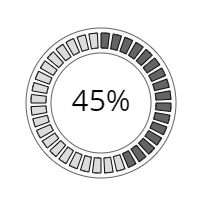

Home → Segment Array Progress Bar
Progress Bar is a graphic element for visualizing the degree of completion of a process (Fig. 1).

Fig. 1 - Progress bar in the form of segment array
The following scripts should be included in the <head> section:
To create an object, the main parameters are passed to the constructor function:
id - progress bar identificator as a text string.
context - CanvasRenderingContext2D for drawing the progress bar.
cx - X coordinate of the base segment center.
cy - Y coordinate of the base segment center.
r_in - base segment inner radius.
thickness - thickness of the base segment.
init_angle - the initial angle of the base segment in degrees. May take negative values.
angle - angle of the base segment in degrees.
The outer radius of the base segment r_out will be calculated automatically during the creation of the object.
Examples of using various properties and methods of the object.
min_value - minimum value of progress.
max_value - maximum value of progress.
value - current value of progress.
speed - speed of change of the progress indicator when it is programmatically changed.active_index - index of the last active segment of the progress bar.
SegmentArrayProgressBar is a composite object. It includes:
base_segment - base segment of the object.
segments - array of segments visualizing progress.
gradient - fill gradient. Type of value is SegmentGradient.
background - fill color (applies if fill gradient is not specified).
border_width - base segment border width.
border_color - base segment border color.
The borders of the base segment can be set separately using direct access to it through the base_segment property.
segments_count - the number of segments-elements of the array.
segment_angle - array segment angle (ignored if proportional flag is set in true).
segment_thickness - array segment thickness.
segment_position - array segments position. Valid values:"inner" - adjoining the inner border of the base segment.
"middle" - location in the middle of the base segment.
"outer" - adjoining the outer border of the base segment.segment_r_in - array segment inner radius. Ignored if property segment_position is set.
start_with - start placing objects on the base segment with segment or with empty space. Valid values:"segment" - start with segment.
"space" - start with empty space.
segment_gradient - array segments fill gradient. Type of value is SegmentGradient.
segment_background - array segments fill color (applies if fill gradient is not specified).
segment_border_width - array segments border width.
segment_border_color - array segments border color.
active_segment_gradient - array active segments fill gradient. Type of value is SegmentGradient.
active_segment_background - array active segments fill color (applies if fill gradient is not specified).
active_segment_border_width - array active segments border width.
active_segment_border_color - array active segments border color.
In the center of the object is a text caption containing a numerical representation of the degree of completion of the process.
The text of the label is formed from the value and units parameters.
font - text font.
text_color - text color.
text_border_width - width of the text border.
text_border_color - color of the text border.
units - units of the value.
full_thickness - value true provides the same thickness of array segments and base segment.
visible - value true ensures object visibility.
segments_visible - value true ensures array segments visibility.
in_progress - flag takes the value true during the animation.
build() - performs basic calculations of the shape and style of object, taking into account the specified properties and flags.
draw() - draws an object.
instanceCopy() - creates an independent copy of the object.
valueToActiveIndex(value) - the function of calculating the active index of the progress indicator depending on the current value of the process completion.
changeValue(value, speed, delay) - animation of changing the current value of the process completion to value with speed and delay.
Events triggered by a SegmentArrayProgressBar are implemented using a CustomEvent.
In the detail.progress_bar field, a link to the object itself is passed.
segment-array-progress-bar-changed - state of the object is changed.
Home → Segment Array Progress Bar